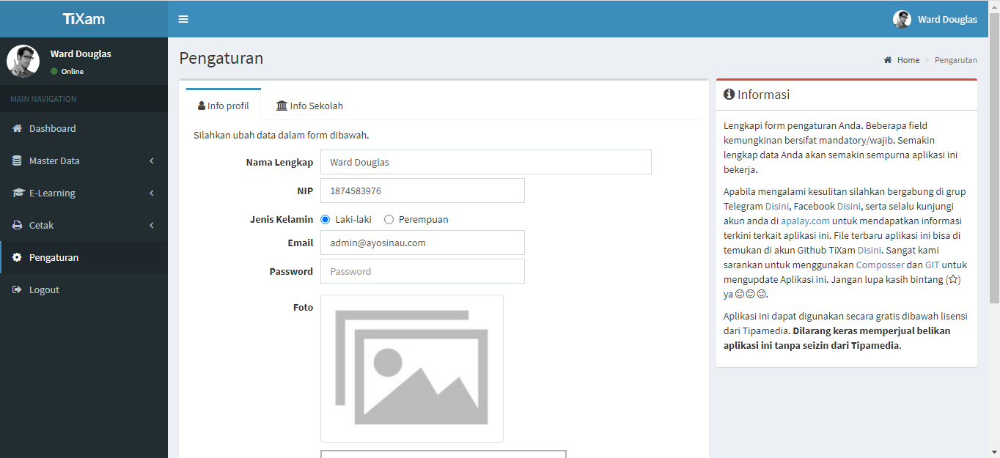
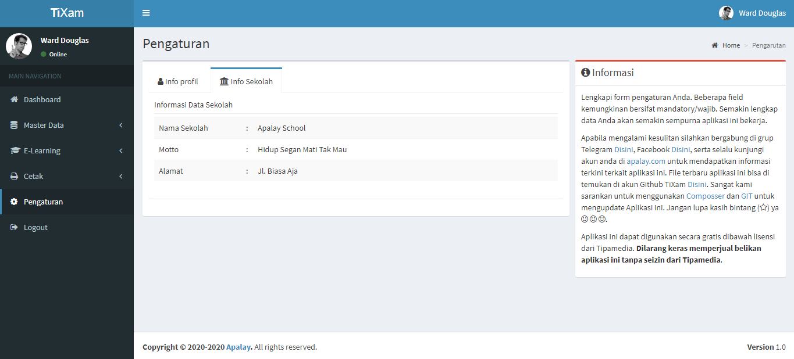

Tixam - Aplikasi Berbasis Komputer
membantu dalam mengembangkan sistem pendidikan di Indonesia.
By
Ver. 1.0
Email: support@apalay.com
Website: apalay.com
kami berterima kasih telah menggunakan Tixam!
Github Help & SupportSystem Requirements
Untuk menginstall Tixam, Your web server must be running PHP 5.4 or higher and Mysql 5.1 or higher. We have tested it with Windows, Mac and Linux but for optimum performance we will recommend to use Linux with Apache webserver. Below are a list of items you should ensure your host can comply with.
- PHP 7.2+
- MYSQL 5.1+
- OpenSSL PHP Extension
- PDO PHP Extension
- Mbstring PHP Extension
- Tokenizer PHP Extension
- XML PHP Extension
- Browser (lebih direkomendasikan Chrome versi 60 keatas)
Instalasi Tixam
Disini akan saya jelaskan proses instalasi pada sistem operasi Windows..
Pertama
silahkan download XAMPP, silahkan download disini. Silahkan install XAMPP yang telah berhasil Anda download. Pastikan dikomputer Anda belum terinstall PHP & MySQL untuk menghindari konflik port. Apabila sebelumnya telah ada, silahkan cek versi PHP harus 7.2.
- Kedua
Setelah berhasil menginstal PHP dan MySQL (dalam paket XAMPP), kita lanjutkan install composer dan gitbash.
Untuk composer silahkan download disini.
Untuk gitbash silahkan download disini.
Silahkan instal composer dan git bash di komputer server Anda. Setelah semua berhasil diinstal dengan benar kita bisa mulai clone aplikasi ini ke komputer kita.
- Ketiga
Buka command prompt (gitbash) lalu arahkan ke folder htdocs (ada didalam folder xampp, misal Anda menginstal di C. Berarti Anda harus ke folder C:\\xampp\htdocs).
Setelah itu ketikan:
git clone https://github.com/apanyaclay/tixam.git
Tunggu sampai file selesai di clone ke folder htdocs server Anda, lalu masuk ke folder tixam dengan mengetikan (```cd tixam```) pada command prompt (gitbash) Anda, lalu ketikan :
composer install -q --no-ansi --no-interaction --no-scripts --no-suggest --no-progress --prefer-dist
php artisan key:generate
Atau apabila anda telah melakukan instalasi sebelumnya silahkan update composer dengan ketikan script dibawah ini (opsi ini hanya digunakan apabila terdapat update aplikasi, saat instalasi awal tidak diperlukan menggunakan script ini karena akan memakan waktu cukup lama):
composer update --verbose --profile --prefer-dist
- Keempat
Buka browser dan ketikan url http://localhost/phpmyadmin. Lalu buat database baru dengan nama tixam.
- Kelima
Setelah itu ketikan script berikut pada command promt:
php artisan migrate
php artisan db:seed
Finish
Setelah proses diatas berhasil dilalui tanpa hambatan, silahkan akses di browser url http://localhost/tixam/public untuk mengakses aplikasi ujian.
Info Tambahan
Untuk login sebagai admin silahkan gunakan email: admin@apalay.com, password: apalay123
Setiap Admin Menambahkan siswa baru maka password delfaut nya yaitu : apalay123
Upgrade dari Versi Sebelumnya
Upgrade dari versi 0.9. ke versi 1.0
Aplikasi ini bersifat terbuka, siapapun dipersilahkan untuk menjadi kontributor untuk meningkatkan kualitas aplikasi ini.
Buat yang telah berhasil menggunakan, jangan lupa untuk kasih bintang ya supaya aplikasi kita ini semakin dikenal luas dan membawa manfaat lebih banyak lagi bagi dunia pendidikan kita.
Penggunaan Tixam
Tixam - Aplikasi Berbasi Komputer
sangat cocok digunakan untuk Ulangan, Ujian, Try Out dan untuk kegiatan pembelajaran apalagi dalam situasi pandemi Covid-19
Admin Panel
Login to Admin Panel through URL - http://yourdomain/public/login
Admin Panel consist 5 modules listed below -
- Dashboard - menampilkan jumlah siswa, jumlah guru, jumlah materi, jumlah paket soal dan aktivitas login
- Master Data - halaman menglola guru, siswa dan kelas
- E-learning - halaman pemberian materi dan ujian
- Cetak - halaman mencetak kartu ujian dan pengumuman
- Pengaturan - halaman untuk melakukan pembaharuan
Dashboard
Terdapat 6 fungsi -
- Jumlah Siswa
- Jumlah Guru
- Jumlah Paket soal
- Jumlah Materi
- Log Aktivitas
- Paket Soal

Master Data
Terdapat 3 Fungsi -
- Guru
- Kelas
- Siswa


E-learning
Terdapat 3 fungsi -
- Materi>
- Soal
- Laporan


Cetak
Terdapat 2 fungsi -
- Kartu Ujian
- Berita Acara


Pengaturan
Terdapat 2 fungsi -
- Info Profil
- Info Sekolah


Siswa Panel
Login to Student Panel through URL http://yourdomain/public/login. Terdapat 4 panel fungsi -
- Dashboard
- Materi
- Ujian
- Pengaturan


Tixam Changelog version 1.0
Version 1.0
Rilis tanggal : 25 November, 2020
Fitur :
- Menambahkan E-learning
- Menambahkan menu pengaturan
- Memperbaiki tema
Free Help & Support
Butuh bantuan dalam menginstall atau yang lainnya ? Segera hubungi kami.
Terima Kasih telah menggunakan Tixam!
Sekali lagi kami berterimakasih karena telah menggunakan aplikasi ini untuk menunjang pendidikan di Indonesia.